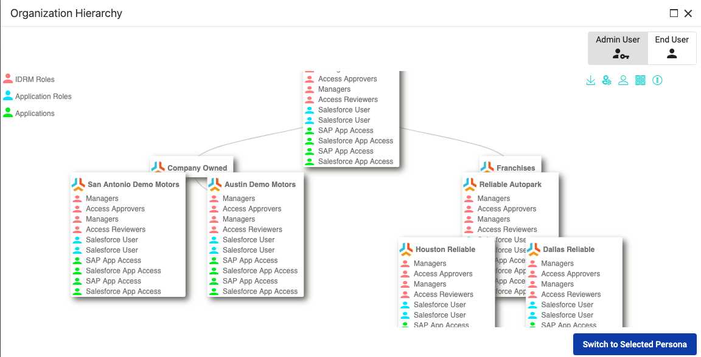
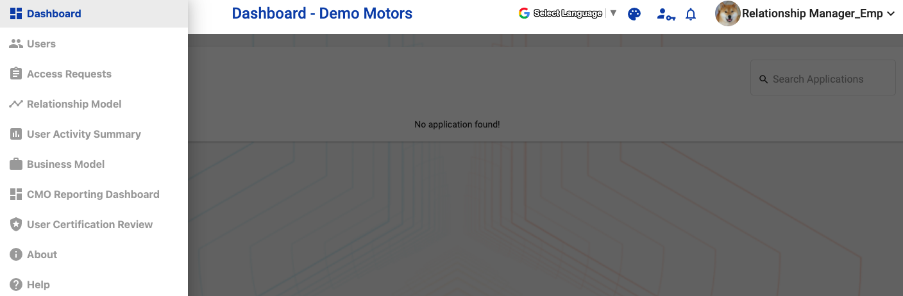
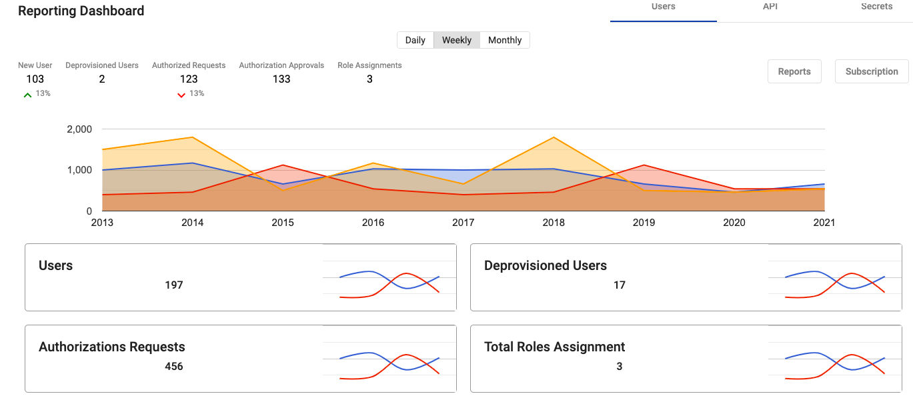
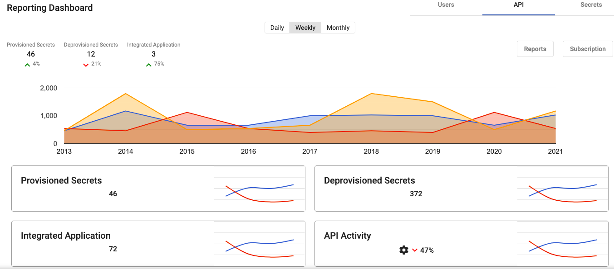
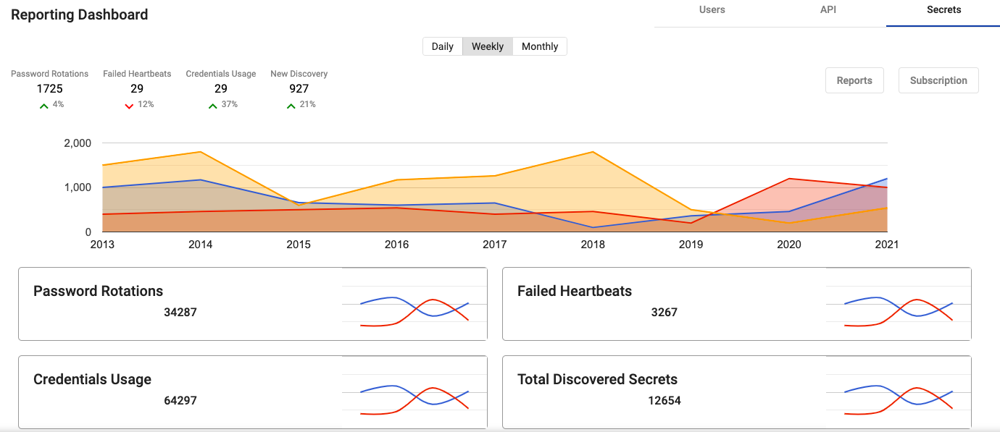
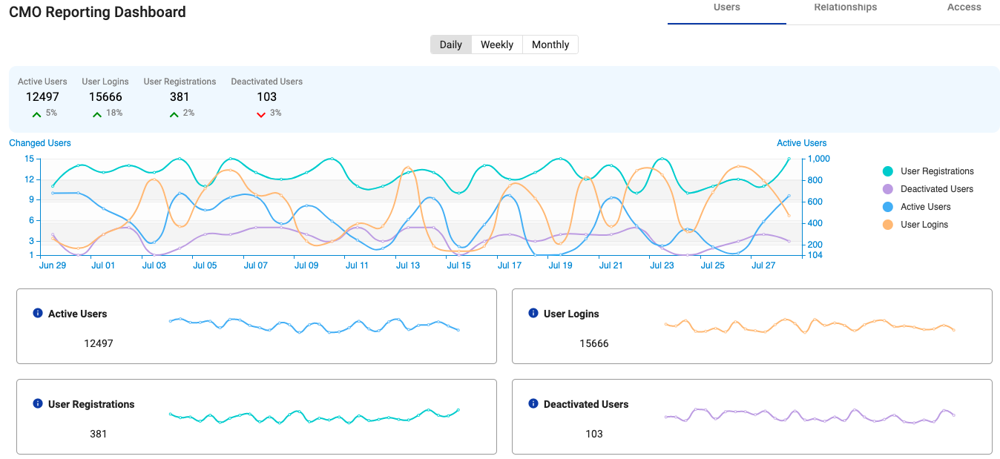
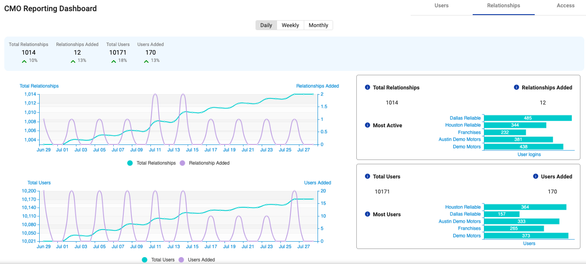
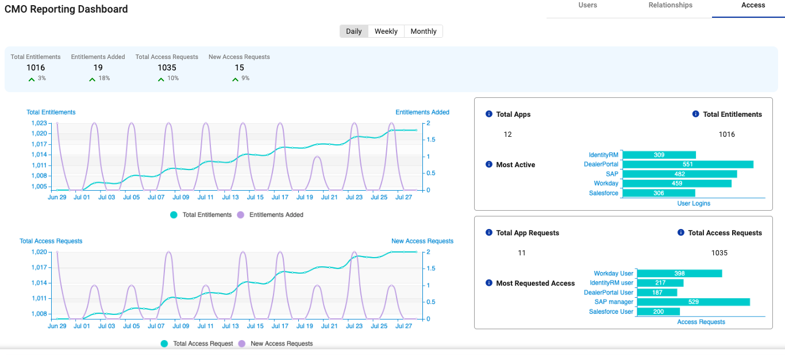

1. Introduction
IdentityRM is a platform that facilitates digital business transformation. IdentityRM provides an evolved thought process where identities belong to relationships, and relationships become the fundamental managed entity.
Relationships allow you to provide business context and macro layer for managing identity within digital business models.
Built upon the latest web technologies such as Bootstrap 3.0 that is fully responsive and mobile aware, the IdentityRM portal supplies a platform agnostic interface for end-users and administrators not tied to any particular SSO or Identity technology.
This guide describes how to use IdentityRM as an administrator and end user.
1.1. Benefits
-
SSO Service: Integrated with industry leading SSO platforms to allow policy-based access single sign-on to SAAS applications such as SalesForce, Office 365 and more.
-
Application Request: Simple workflow to allow users to request and seek approval for applications.
-
User Management: User registration and self profile management.
-
Cloud hosted: Fully hosted at Heroku, AWS or customer cloud.
1.2. Accessing IdentityRM
Install IdentityRM
You need to install IdentityRM to access. For details, refer to IdentityRM Installation Guide.
Role Required: Administrator
Switching Persona With the same login, you can use multiple personas to access IdentityRM. A user persona defines the type of role a user plays in an organization. For example, administrator, end user, network engineer.
Role Required: Administrator or End User
Even the same employee can play multiple roles at times. IdentityRM supports such resources with the unique feature to switch user persona within the same login session.
A user can select from the designated personas. For example, select between Administrator or End User. The application access changes instantly according to the access rights associated with the selected role.
2. Exploring the User Interface
You can use any browser to open IdentityRM. This section helps you understand the navigation and features available in IdentityRM.
Role Required: Administrator or End User
2.1. Landing Page
As you enter the IdentityRM URL on a browser, the landing page displays the following two options:
-
Register: If you do not have login credentials, you can create your own account for the portal using the Register option. Select your node, add details, create a password, add security question and answer to secure your account later, and then click Create Account.
-
Login: Click Login and enter the credentials to access IdentityRM. A successful login displays the Select Persona dialog box. You can directly select a persona or view organization hierarchy and then select a persona.
-
Select Persona: Your persona selection defines your access of the portal. For example, if you have two user personas, and you select End user, then you cannot the exclusive options available to the administrator. Select the desired role and click Switch to Selected Persona. The dashboard appears.
-
-
View Hierarchy: Before login, you can select View Hierarchy to have a graphical overview of your Organization Hierarchy as an admin or end user.
-
Other Options: If you are an existing user but do not remember your username or password, click ] from the top-left menu. The icon displays options, such as Forgot Username, Forgot Password, Help, and About.
-
2.2. Dashboard
Role Required: Administrator or End User
A successful login takes you to the dashboard. You can view multiple options.
-
Applications: The Applications page displays the integrated applications. The pane appears empty if you have not added any applications. If available, then you can either use the Search box to find an application or directly click on the name of the desired application to open. The application opens in a new tab.
-
User Profile: The profile of logged-in user appears on the top-right pane. Click the username or drop-down menu options to view details. For details, see Accessing and Managing Your Profile.
-
Themes: Select the option from the top menu to change the existing theme of the portal.
-
Language: Select the option of your choice to the view the portal.
-
Switch Persona: Using the icon on the top menu, even after logging in, you can switch your user persona whenever you need.
-
Notifications: The bell icon displays in number the messages that need your attention and are unread.
-
Multiple options: Click to access multiple options to use IdentityRM.
For example:
-
Users: Helps you manage the users. For details, see Manage Users.
-
Access Requests: Displays all the requests created for access. For details, see Manage Access Request.
-
Relationship Model: The graphical display helps you manage the roles of your users within the organization. For details, see Adding and Managing Relationship.
-
User Activity Summary: Displays the activity details of the logged-in user, or the impersonated user. For details, see Viewing User Activity Summary.
-
Business Model: Helps you add template or apply an existing template to manage your business. For details, see Adding and Managing Relationship.
-
Reporting Dashboard: A single window to view all the activities related to the users, relationships, and access. For details, see Reporting Dashboard.
-
User Certification Review: Allows running a campaign to manage user access or approve certification requests. For details, see Manage a campaign.
-
About: View details about IdentityRM.
-
Help: View documentation about the product.
-
3. Accessing and Managing Your Profile
The employees with access to IdentityRM can view their profile from the top-right menu.
Role Required: Administrator or End User
3.1. Access the Profile
After logging in, simply click on the user icon, or the role name, or the drop-down options to access your profile. Based on the access levels, the options appear.
3.2. Manage your Profile
After your first login, you can manage your profile. For example, you can modify the details, request access for entitlements, and change password.
3.2.1. Edit your Profile
Using the edit profile wizard, you can view and update details for the following options:
-
Profile: Displays basic details.
-
Applications: Displays the list of applications associated with the profile.
-
Application Roles: Displays the list of application roles associated with the profile.
-
IDRM Roles: Displays the list of IdentityRM roles associated with the profile.
-
Unauthorized access: Displays the list of unauthorized access from the profile.
To edit,
-
Go to the Profile on the top-right menu and click the drop-down arrow.
-
Select Edit a Profile from the displayed list of options. The Edit a Profile wizard displays the tabs of Profile, Applications, Application Roles, IDRM Roles, and Unauthorized access.
-
View and Modify your profile for the following:
-
First Name: The name appears on display.
-
Last Name: Appears as profile name with the first name.
-
Phone No.: Add a number for communication.
NoteThe first name and last name appear as your profile name when you are logged in.
-
-
View and Modify Applications and Application Roles. You can click Manage Entitlements.
NoteYou can filter the available list using the search options of Filter by Node or Filter by Application. -
View and modify IDRM Roles. You can click Manage Entitlements to request access.
NoteYou can filter the available list using the search option of Filter by Node. -
View details about Unauthorized access. You can click Manage Entitlements to request access.
You can view Role and Node of the unauthorized access.
3.2.2. View Hierarchy
The option to view hierarchy appears when you click Edit a Profile. Click View Hierarchy to see graphical display of the organizational hierarchy. The details about all entitlements and application are also displayed.
3.2.3. Manage Entitlements
Use the option to request access for application and roles.
3.2.4. Change Password
Use the option to change your password on own or when an admin resets your password for security reasons. From the profile drop-down, select Change Password and update.
3.2.5. Change Recovery Questions
The recovery question option adds extra layer of security to your account. Changing often the question and answer enhances the security further. From the profile drop-down, select Change Recovery Question and update.
3.2.6. Request Access
Use the option when you need to access additional entitlements. From the profile drop-down, select Request Access and select Entitlements that you need.
4. Using IdentityRM as Administrator
As an administrator, you can add and manage a user.
4.1. Add a user
You can add a user and after approval the user appears in the user list.
|
Important
|
The added user appears in the user list page only after approval. |
To add,
-
Navigate to > Users.
-
Click Add User and select one of the following options:
-
New User: Add a new profile to your team.
-
Existing User: Add an already existing team member to the selected project.
-
-
Perform the following steps to add a new user:
-
Click Add User > New User.
Create New User page appears.
-
Enter the following details and click Save:
-
Select the desired option for Select Relationship.
NoteSelect Relationship refers to the available sub-nodes created apart from the default node. -
Select the desired option for Select Home Relationship.
NoteHome Relationship is the default node associated with a profile. -
Enter the following details about the user:
-
Username
-
First Name
-
Last Name
-
Display Name
-
Email
-
Phone No.
-
-
-
Select Start Date and Expiration Date to define the duration of the relationship.
-
Click Save.
A message confirms successful creation of the user.
NoteThe added user appears in the user list page only after approval.
-
-
(Optional) To add an existing user as the new user,
-
Click Add User > Existing User.
-
Select the desired user from the Select Existing User dialog box.
Add Existing User page appears with auto-filled information of the selected user.NoteYou can modify the details if required. -
Select the desired option for Select Relationship.
-
Select the desired option for Select Home Relationship.
-
Select Start Date and Expiration Date to define duration of the relationship.
-
Click Save.
A message confirms successful creation of the user.
-
|
Note
|
The added user appears in the user list page only after approval. |
View User Details
The following user details are visible on the Users page:
-
Username, Email, Nodes, Source Directory as provided while adding the user.
-
Last Login to view the last access time of a user.
-
Status to display the functional condition of a user.
4.2. Manage Users
The administrator can perform multiple actions on the Users page to manage the added users.
4.2.1. Search a user
The user page displays all the added users. Using the search filters available on the Users page, you can find the desired user.
To search,
-
Select one of the following criteria to Search by:
-
First Name: Refers to the first name entered while adding the user.
-
Last Name: Refers to the last name entered while adding the user.
-
Username: Refers to the username entered while adding the user.
-
Email: Refers to the email ID entered while adding the user.
-
Status: Refers to the status of existing user. Select a status type from the drop-down menu.
-
-
Enter details related to the selected criteria.
For example, if looking for a user registered with the name Max Hue, you can select First Name as criteria and enter Max in the Filter field.
The search result displays the matching details.
|
Note
|
For Status, you need to select the options from the drop-down menu in the Filter field. For other criteria, you need to enter the details. |
4.2.2. Delete a user
To delete,
-
Select the Actions icon for a user from the Users page and click Delete from the displayed list of options.
-
Click Yes on the confirmation dialog box. The user is deleted
4.2.3. Change Status of a User
The functional condition of a user is indicated using multiple types of status.
Status of a user:
-
Active: Indicates that the user is functional and able to use the product.
-
Pending: The user is created but waiting for approval. The user cannot work.
-
Deleted: The user does not exist.
-
Blocked: The user cannot perform any function.
-
Disabled: The user ID is not in active state and cannot function.
-
Locked Out: The user is not in a state to function.
-
Password Expired: The user needs to reset password before the next login.
4.2.4. Impersonate a user
Do you have an urgency where you need to complete some task for other users? Then, use this feature to impersonate a user. All the access and information are available as if you are logged in as that user.
To impersonate,
-
Select the Actions icon for a user from the Users page and click Impersonate from the displayed list of options.
-
Click Continue on the confirmation dialog box.
4.2.5. View details and Edit Profile
You can view the details of a user and also reset password and change recovery questions for a user. Select the desired option, and you are led to the user details page.
View Details
-
Select the Actions icon for a user from the Users page.
-
Click View Details from the displayed list of options.
You can view the user details.
Reset password
-
Select the Actions icon for a user from the Users page.
-
Click Reset Password from the displayed list of options.
-
Click Yes on the confirmation dialog box.
The status of user changes to Password Expired. The user needs to reset the password before the next login.
Change Recovery Questions
To change questions,
-
Select the Actions icon for a user from the Users page.
-
Click Change Recovery Questions from the displayed list of options.
Change Recovery Question page appears.
-
Enter Current Password for authentication.
-
Enter the new Recovery Question and Recovery Answer.
-
Click Submit.
The new recovery question with answer is applied to the user.
4.2.6. Change Access of a user
You can change entitlements for a user.
To change access,
-
Select the Actions icon for a user from the Users page.
-
Click Change Access from the displayed list of options.
Request Access page appears.
-
Select desired options for Access Type and Node.
NoteAs access type, you can opt for All or one of the displayed options, such as Application or IDRM Roles. The entitlements matching your selection appear.
-
From Available Entitlements, select one or more entitlements.
-
Click the icon > or >> to move to the right pane of Your Current Entitlements.
-
Click Request Access.
The request is submitted, and the selected user receives the assigned access after approval.
4.3. Manage Access Request
The users request for access. The administrators approve or reject the access using the options available on the Access Requests page.
The page displays all the access requests with the status. Unless approved, the status displays as unassigned or unapproved. The request contains the information about requester, target user, node name, and a section named Action to manage the requests.
A request displays one of the following status types:
-
Unassigned: Awaiting action from administrator.
-
Assigned: Assigned, but not approved.
-
Approved: Assigned and approved.
-
Declined: Not approved.
The administrator can view the following details to manager access:
-
Access Request Queue (Assigned/Unassigned)
-
Assign Access (Approve / Decline)
-
View Workflow
-
Filter Access by Status
4.3.1. Assign and Approve a Request
Role Required: Administrator
The administrator can assign, reject, or approve a request.
To assign and approve,
-
Log in as Admin tenant.
-
Go to the Access Requests page.
-
Select Manage as Action for a request.
-
Click Assign on the Manage Access Request page.
-
Click Approve on the next page.
The status of the request changes to approved or assigned and the request is no more visible on the Access Requests page.
5. Adding and Managing Relationship
IdentityRM helps you define relationship for resources at all levels. Relationships allow you to provide business context and macro layer for managing identity within digital business models.
Role Required: Administrator or End User
The relationship for every level is independent, and you can define as per requirement. To work with relationship, navigate to the Relationship Model page.
Define the organization relationship based on a model that defines your setup. For example, a Company follows company-owned and Franchise business model. Both can have dealerships at the next level.
Sample flow: Company>Company-owned / Franchises>Dealership
From the Relationship Model page, you can add a node and manage.
5.1. Add a new child node
You can add multiple child nodes.
To add,
-
Click + for the existing node or section.
-
On the New Node screen, enter the following details and click Save:
-
Name: Enter a unique name.
-
Node Type: Select a node type. The drop-down menu displays the existing node types.
-
User Source: Select a directory from the drop-down menu.
-
Dashboard Service: Select a service from the drop-down menu.
-
Expiration Date: Select a date or opt for Never Expire.
-
User Quota: Enter a number to assign number of users for the node.
-
5.2. Manage a Node
Role Required: Administrator or End User
Perform the following actions on an existing node:
-
Search: Use the option to find a node from the available list. To search, enter the term in the search box to locate a node.
-
Toggle: Expand all the nodes using the Toggle All option.
-
Preview Hierarchy: View the organization hierarchy for the available tenant. To preview, click the icon of Preview Hierarchy.
-
Start campaign: Start a campaign for the desired node directly from the Relationship Model page. For details, see Start a campaign.
-
View Node: Click a node to view the details in the right pane.
-
Edit Node: You can modify details of an existing node. To edit, select the desired node. Click the edit icon on the right pane where the details of the selected node appear.
-
Delete Node: Remove a node when not required, using the Delete option. To remove, select the delete icon visible in front of a node on the left pane.
5.3. Start a campaign
The Relationship model page helps to start campaign for any node. You can start the campaign from the Relationship Model page and monitor progress from User Certification Review.
To start a campaign,
-
On the Relationship Model page, select the node from the left pane and click the icon for Start Campaign.
-
On the Start Campaign screen, enter the following details:
-
Select the desired node from the Start Node drop-down menu.
NoteThe name of node appears if you have already selected the node. You can modify and select other node. -
Select one of the following types of campaign:
-
Account certification: Verifies the authenticity of certifications available for accounts.
-
Access certification: Verifies the available certifications for access rights.
-
-
Select start and end dates for the campaign.
NoteBy default, the current date appears as the start date. You can modify.
-
-
Click Start campaign.
A message confirms that the campaign started. Navigate to User Certification Review to view the progress and results.
6. Viewing User Activity Summary
The User Activity Summary dashboard is a one-stop page to view all information and activities related to the logged-in user.
Role Required: Administrator or End User
Information Available on the dashboard
-
Admin Hierarchy: Placed on top, the graphical view displays the complete hierarchy. You can click to open the organization hierarchy on a separate screen.
-
Managed Application: Placed on top, this section lists all the applications that the user manages.
-
Sign in Activity: A graphical view displays number of times a user logs in daily.
-
Request Activity: A graphical view to display list of all requests sorted by day/month/year.
-
User Info: The section displays the key information about the user. For example, Type of user and display ID.
-
Workflow: Displays in number the requests, notifications, tasks, and History. Click on any number to view details in a separate related page.
-
User Account Status: Tabular display of the overall status of the user account. Click on any number to view details in a separate related page.
-
Notifications: Displays the News and Alerts for the user. Click to view details in a separate related page.
7. Implement Business Model
Using IdentityRM, you can set up multiple business models to run your operations effectively. Just in two steps, create a business model and let your users manage work.
Role Required: Administrator or End User
Business model forms the framework of adding relationships. You can use an existing template or create your own to define a model that suits your requirement.
Role Required: Administrator or End User
To start with, add a template and create category from the Business Model page.
7.1. Benefits of Business Model
7.1.1. Perform multiple actions on Added Template
You can perform the following actions on the added templates:
-
Edit a template: You can update an existing template for name, category, model image, and description. Select the edit icon on the desired template and modify on the Edit Template page.
-
Create Relationship Model: Add a tenant and other details to create a relationship model. Select the Create Relationship Model icon on the desired template and add details on the Create Relationship Model dialog box.
-
Preview a template: View how the template appears. Select the Preview icon on the desired template, and the NodeType Configuration Preview dialog box appears.
-
Clone a model: To add a template, you can either add a new one or else clone an existing template. From the preview dialog box of NodeType Configuration, click Clone Template and modify details to add a new template.
-
Add Node: You can also add a new node to the existing template. From the preview dialog box of NodeType Configuration, click Add Node and add details to prepare a new node.
7.1.2. Create Categories
The Category section on the left pane displays all the categories that you have added. You can differentiate requirements into multiple categories. For example, Franchise and Service Provider or Healthcare, Manufacturing, and Retail. For every category, you can create customized templates.
You add a new category while adding a template. One category can have multiple templates.
7.1.3. Search Template
Every category provides the search option to find desired templates. Enter the name of template and search result displays the matching template.
7.2. Workflow to implement Business model
7.3. Create a Business model
Use the pre-defined models or create your own template for different categories of your business. Create relationship models and assign entitlements to configure the business model.
To add a template, you can either create one or clone the desired existing template.
7.3.1. Create a Template
To create templates, you can either add a new template or if clone an existing template and rename to add one.
Add a template
To add,
-
Click Add Template on the Business Model page.
-
On the Add New Template, perform the following steps:
-
Enter a unique Name for your template.
-
Enter a unique name for Category.
NoteYou can select same category for multiple templates. -
Select a template model as Image.
-
Enter details as Description to define the purpose.
-
Click Save. The Business Model page displays the category name and template is visible when you select that category.
-
Clone a Template
To clone,
-
Click Preview Template for the desired template.
-
Click Clone on the page.
The template appears with the cloned name under the same category. -
Click Edit Template and rename the template as desired.
You can also modify other attributes of the cloned template.
7.3.2. Create Relationship Model
A Relationship Model helps create a separate tenant, and a relationship model with a single root node. The model results in a user with the role of a Relationship Manager.
Hover over the added template and click the icon of Create Relationship model.
To create,
-
Hover over the template and click the icon of Create Relationship Model.
Create Relationship Model dialog box appears. -
Enter the following details:
-
Tenant Name: Define name of the tenant for the relationship.
-
Domain: Refers to a valid domain related to the tenant.
-
User Source: Refers to the source of the defined user.
-
Dashboard Service: Select from the available list.
-
Relationship Manager: Select an existing user or click Add a User to create. For details about, see Add a user.
-
IDRM Roles: Select an IDRM role from the available list.
-
-
Click Create.
The relationship model is assigned to the template.
7.3.3. Configure Template
You need to configure entitlements and node for the business model.
To configure,
-
Hover over the template and click the icon of Preview Template.
NodeType Configuration preview dialog box appears. You need to configure for IDRM Roles, Application Roles, and Applications access. To enhance the business model, you can also add more nodes and configure. -
On the right pane, click the Edit icon for IDRM Roles and perform the following:
-
On the right pane, click the Edit icon for Application Roles and perform the following:
-
On the right pane, click the Edit icon for Applications and perform the following:
-
Click Add Node.
The Edit NodeType Details page is displayed. You can click Delete to remove the node or else update the details.
-
Add the following details to update the information for node and click Save:
-
Name: Refers to the name of the node.
-
Label: Refers to the display name.
-
Description: Enter details to explain the scope of node.
-
Icon: Assign the desired icon to the node.
-
IDRM Roles: Select from the available options or assign.
-
Application Roles: Select from the available options or assign.
-
Application: Select from the available options or add.
-
Allowed ancestors: Select the existing nodes from the available options. The node appears below the selected ancestors.
-
Allowed metadata: Add desired metadata.
The node appears on the main screen of the related Business Model template.
-
After creating the business model, you need to complete integration.
7.4. Integrate IDRM with IDP
You can integrate IDRM with your IDP, for example Okta.
7.4.1. Configure IDP for IDRM
<STEPS required>
7.4.2. Integrate IDRM with IDP Tenant
<STEPS required>
8. Managing Solutions
8.1. Run and Manage a Campaign
The campaign feature helps to conduct routine security and authorization checks on nodes. You can run a campaign and then monitor the results.
8.1.1. Run a Campaign
A campaign is useful for multiple types of validations. For example, account or access certification. To start a campaign, navigate to Relationship Model.
To create a camapign, see Start a campaign.
8.1.2. Manage a campaign
The campaigns that you create from the Relationships page are visible on the User Certification Review page.
Role Required: Administrator or End User
The page lists all the campaigns. The campaigns are generally related to Account certification, Access certification, and Account Inactivity certification.
The User Access Certification Campaigns page lists the status and other details of a campaign.
Details of campaign:
-
Campaign ID: Refers to the system-generated ID for a campaign.
-
Name: Refers to the name you mention while adding a campaign. For example, Account certification and Access certification. You can click on the name to view details about the campaign and take further action if required.
The User Access Review page displays the details about the campaign and also displays list of usernames who are identified as part of the campaign. For every displayed username, you can view the status and take further action, such as, escalate and revoke.
-
Description: Displays name of the campaign.
-
Comment: Displays description about the campaign.
-
Node: Refers to the node related to the campaign.
-
Start: Displays the start date of the campaign.
-
End: Displays the completion date of the campaign.
-
Review Progress: Displays the number of participants. For example, 5/50 indicates that 5 out of 50 have participated in the campaign.
-
Status: A campaign displays either Active or Closed status.
9. Using Reporting Dashboard
IdentityRM provides two types of reporting dashboard to help you view related historical details at a single screen.
9.1. Reporting Dashboard
The reporting dashboard provides details about the Secrets, API, and user logistics, such as count, provisioning, and authorization. You can view daily, weekly, and monthly reports.
Role Required: Administrator or End User
Key Highlights
-
Users: Displays User count, new users, deprovisioned, authorized requests, authorization approvals, and total role assignment.
 -
API: View provisioned and unprovisioned secrets, API activity, and integrated applications.
 -
Secrets: View password rotations, failed heartbeats, credential usage, and new discovery.
 -
Reports:
-
Subscription:
9.2. CMO Reporting Dashboard
The reporting dashboard provides details about the existing users, relationships, and access requests. You can view daily, weekly, and monthly reports.
Role Required: Administrator
Key Highlights
-
Users: Displays active users, user logins, user registrations, and deactivated users.
 -
Relationships: View total relationships and users, added relationships and users.
 -
Access: View total Entitlements, added entitlements, total access requests, and new access requests.
